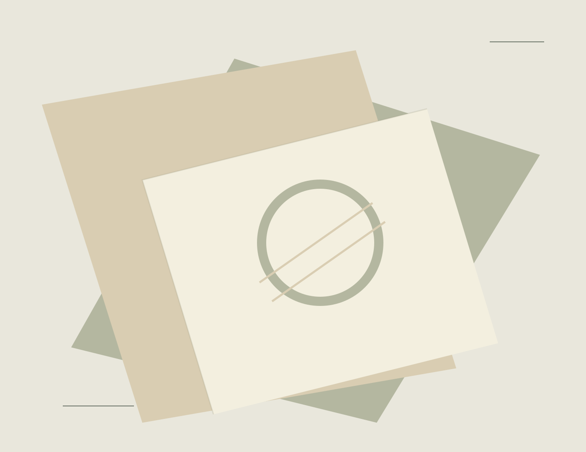
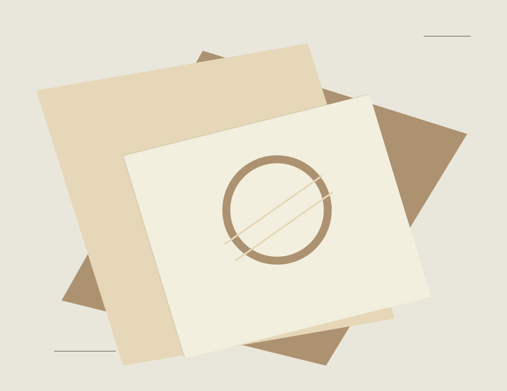

01표면과 색을 탐구하는 종이 노트
생각은,
종이 위에서.
색과 두께, 손끝의 감촉으로 종이를 고릅니다. 작은 인쇄물부터 오래 남을 기록까지, 쓰임에 맞는 소재를 발견해 보세요.
가상의 브랜드와 콘텐츠로 구성한 독립 디자인 시연입니다.

모양보다 먼저, 손끝에 닿는 감각
표면 · 색 · 쓰임의 기록06가지 이야기
종이 라이브러리
어떤 감촉을 찾고 있나요?
종이의 쓰임을 상상하며 만든 가상 소재 컬렉션입니다.
오브시트의 시선
같은 흰색도, 서로 다른 이야기가 됩니다.
오브시트는 종이를 완성된 답보다 가능한 시작으로 바라봅니다. 빛을 받는 표면과 접었을 때의 선, 펜이 지나간 자리를 관찰하며 소재를 골라갑니다. 이 컬렉션은 실제 제조사의 제품을 대신하지 않는 창작 예시입니다.
브랜드 이야기살펴보는 방법
소재를 고르는 세 가지 순서
필요한 정보를 먼저 살펴보고, 나에게 맞는 다음 단계를 선택하세요.
- 01
관심 있는 항목 고르기
종이의 쓰임을 상상하며 만든 가상 소재 컬렉션입니다.
- 02
쓰임과 구성 살펴보기
각 항목의 소개와 구성 정보를 비교하며 필요한 점을 확인합니다.
- 03
다음 이야기 정리하기
어떤 인쇄물을 준비하고 있나요? 필요한 샘플 구성을 화면에서 정리해 보세요.
작은 기록
종이를 다시 보는 작은 관찰
새로운 관찰에서 시작한 가상의 에디토리얼입니다.
다음 이야기를 함께